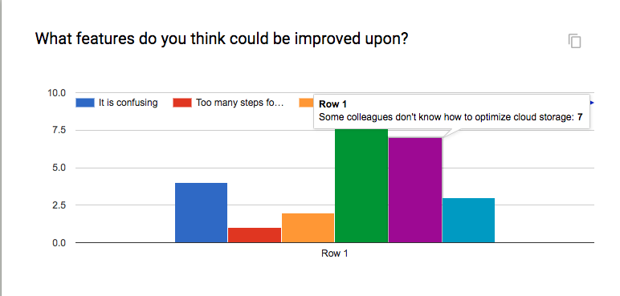
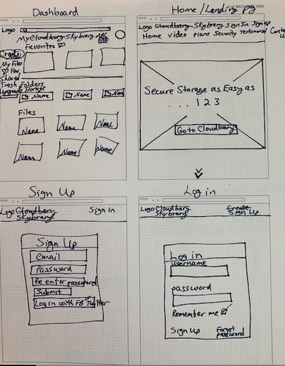
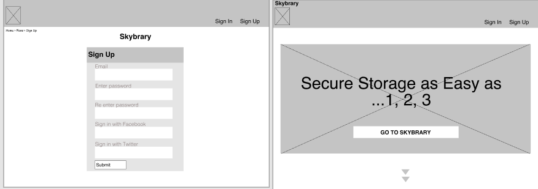
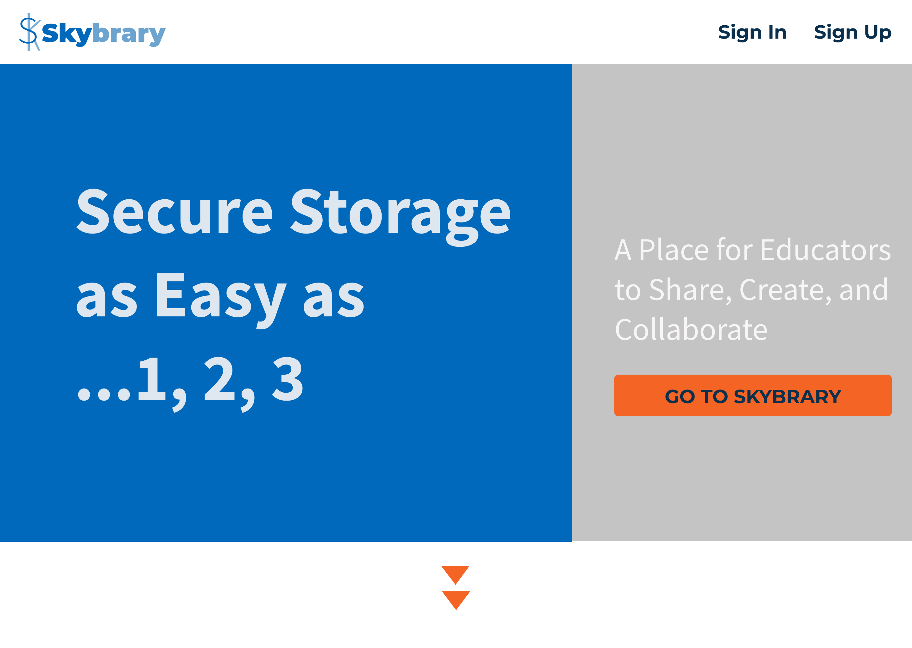
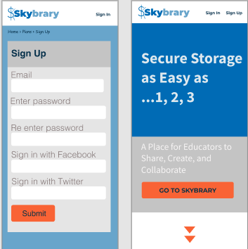

The Project
In this project, the client wanted a cloud storage app, but had no clear direction on where they wanted to go with their idea. They left it up to me, the UX Designer, to come up with all the artifacts. I did the research, wireframes, branding, testing, and mockups. This is cloud storage service tailored toward educators and can be used on mobile or desktop. The following is my pitch:
The library represents where everyone used to keep files and search for files. Now some people never step foot into a physical library. The cloud is a metaphor for the internet, where our files are stored safely over many servers. The sky is untouchable and the library is archaic. The library is where we all used to look for files, keep information, share information, and collaborate on projects...Skybrary is where we do all of this, but faster and more efficiently!
I hope it touches the humor and nostalgia of where we were and how far we have come with technology. I want people to hear the name and feel like it’s a safe and familiar place; like the library. The library is where our teachers used to share information. Skybrary is where our children's teachers collaborate. This site is a place where educators can come and do what they know best. Share, create, and collaborate to help kids. Skybrary is as easy as... 1,2,3.
Competitive Analysis

I did extensive research on other cloud storage apps in the current market choosing two widely used apps and one smaller, but highly rated app.
Using a SWOT analyis, I was able to chart out what the strengths, weaknesses, opportunities, and threats each company proposed.
I ultimately based my design off of what users loved about the competition and what their pain points were.
Being a visual learner myself, I used color to make distinctions between the companies for easier comprehension.
Survey and Personas
If you don't ask, how do you know? Educators were targeted in this cloud storage survey. 85% of the users use cloud storage as their way to communicate and collaborate with teachers, parents, and students. They use the cloud storage to save content, organize content, create docs and spreadsheets, upload files, and share files in real time to edit and collaborate on projects.
Educators who used the product were frustrated that some teachers did not use cloud storage and made work harder when they had to print materials for them instead of just sharing it on the cloud.
People who do not use cloud storage need training to understand how to use the product. They expressed interest in using the product if they were trained.
What does the user need? Based on the survey data, interviews, and user testing, I was able to create personas who represent what type of users would utilize the app. Brittany is spending time away from her special needs students making copies of documents for teachers who are still using a photocopy to share materials. Brittany's life would run a whole lot smoother, if her colleagues would use cloud storage to share and collaborate on student work and projects.
User Flows
Without a good userflow, your site will suffer.
Carefully thought out userflows and testing must be done to ensure the designer is choosing the route that makes sense for the user to navigate through.
You can never be certain unless you listen to what your users need. Can they get the result their looking for without much effort on their part? You better hope so.
Wireframes
I did a rough sketch of the wireframes first to get a hierarchy established. This was while I was deciding on a brand name. I ended up changing the name to Skybrary.
On the sign up wireframe, I originally had the onboarding text in the field, but when I tested it on users, they preferred to see the text while they were filling out the field. I moved it on top of the field to make the directions more user friendly.
The second screen is the wireframe of the landing page. I ended up changing the landing page layout a bit on the mockup, because when testing, I realized I needed to explain what the app was all about.
Branding


I brainstormed the name first. Using Skybrary, I thought of everything that came to mind and concentrated on the values the app needed to convey. I also used these thoughts to write my pitch.
Using my mindmap, I sketched what I was visualizing when I read the map.
Security kept coming to mind as I was drawing the padlocks, but when testing users I found that a simpler logo was easier for the user to remember and decided on the "SK" combination.
Mockups
On the revised mockup, you can see how I changed the layout and added a description about what the app is offering. The call to action button and scroll are meant to bring the eye to what the user has to do next. The blue and gray color palette represents trust, which is an important feature when choosing a cloud storage app. The design has plenty of white space with a simple and clean feeling. It is straighforward to get the user through the onboarding process quickly and efficiently.
 Looking Back
My growth over this project was exciting. As I reflect back on my process, there was a lot of trial and error. I used others as mentors. When I didn't have anyone to help, I researched the internet and found my answers there.
The biggest changes resulting from this research are outlined below:
The Moodboard
My original moodboard was not detailed enough. I needed to showcase my hard work by being literal and specific about what my vision was. I believe the updated moodboard is more thorough and comprehensive.
The Dashboard
When doing preference testing I decided to clean up the design from the wireframe to the mockup. I moved the search button and shortened it to make more space in the nav bar. I added a help and settings button. Accessibility is extremely important to me, so I placed icons with the links. Moving the title down and lining it up with the files created more consistency.